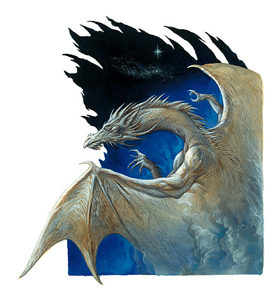

巴哈姆特（Bahamut）

铂金龙，善龙之王，北风之主
弱等神力
圣徽：星辰与星云
居住位面：天上界
阵营：守序善良
神职：善龙之王，风神
信徒：善良龙，任何躲避恶龙攻击的人
牧师阵营：守序善良、中立善良
领域：大气，善良，机运，保护
偏好武器：爪
巴哈姆特在许多地方都是被崇敬的对象。虽然所有的善良龙都对巴哈姆特抱以敬意，但其中，金龙、银龙和黄铜龙对他则抱持以一种独特且显著的至高尊重。其他的龙，甚至是邪龙（或许要除去他的竞争对手邪龙之神提亚玛特）也对巴哈姆特的睿智与力量表示尊敬。
以他的自然形态出现时，巴哈姆特是一条铂金色的身材修长蜿蜒的巨龙。它浑身上下所覆盖着的银白色鳞片，即使是在微弱的光亮之下依然能反射着漂亮的光辉。巴哈姆特如猫一般的双眼是深蓝色的，据说，泛着如仲夏的天空一般的苍青色光芒。另有些人则坚持说巴哈姆特的眼睛是如冰河之心一般的灰青色。或许，这两种说法仅仅只是反映出了伟大铂金龙的变换着的情态而已。
教义
巴哈姆特是严格地反对任何邪恶事物的。他不能容忍任何邪恶的行径。除此以外，他就可以算是多元宇宙里最富有同情心的存在之一了。他对那些被蹂躏者，被侵略者和无助者抱有着无限的同情。他强烈地、迫切地要求他的追随者去行善，但他同时也更喜欢凡人们自己去解决自己有能力解决的问题，自己去面对属于自己的战争。对于巴哈姆特而言，他更喜欢提供线索与信息，医护伤者，或者是一个（暂时性的）避难所，而不是去直接接过人们肩头背负着的担子。
神职人员与神殿
巴哈姆特几乎没有牧师，更没有多少神殿。他只接受善良牧师的崇拜。巴哈姆特的牧师，大多是龙，半龙，或者是其他被巴哈姆特的哲学所深深吸引了的生物，他们居于任何需要他们的地方，毕其一生为善良的利益进行着微妙而精细的斗争，所谓微妙而精细，是指他们努力使自己的斗争尽可能不对尘世造成任何伤害。
很多金龙、银龙和黄铜龙在自己的巢穴中维持一块供奉着巴哈姆特的神龛，神龛是很简单的，一般除了画在墙上的巴哈姆特的圣徽之外就没什么了。
巴哈姆特
超巨型龙
神格等级：10
生命骰：53d12+742（1378hp）
先攻调整值：+4（精通先攻）
速度：60尺，飞行300尺，完美机动性，游泳60尺
防御等级：76（-8体型，+10神格等级，+52天生防御，+12偏斜）
攻击加值：咬 +76近战，2爪 +71近战，2翼 +71近战，尾部拍击 +71近战；或者法术 +76近战接触或 +55远程接触
伤害加值：咬 4d8+21/19-20，爪 2d8+10，翼 4d6+10，尾部拍击 4d6+31；或者以法术攻击
占据/威胁范围：40尺*80尺/15尺
特殊攻击：龙息，碾压，尾部掠击，法术，类法术能力，领域神力，超凡神圣能力。
特性：神术免疫，火类法术免疫，伤害减免 45/+4，神术自发性施法，理解、交谈及阅读所有语言并直接于任何10里内的生命存在交谈，远程沟通，神祗国度，随意无误传送，随意位面旅行，昏暗视觉 10里，嗅觉，黑暗视觉，SR+2，神圣光环（1000尺，DC32）
豁免调整值：坚韧 +52，反射 +38，意志+51
能力值：力量 53，敏捷 10，体质 39，智力 35，感知 36，魅力35
技能：炼金术 +50，动物理解 +75，唬骗 +75，专注 +82，交涉 +75，易容 +44，脱逃术 +66，收集信息 +75，医疗 +51，威吓 +75，方向感 +51，知识（奥术） +44，知识（历史） +44，知识（地方） +44，知识（自然） +44，知识（宗教） +44，知识（位面） +44，聆听 +81，探知 +78，搜索 +75，察言观色 +79，辩识法术 +78，侦察 +81，野外知识 +51
专长：警觉，盲斗，顺势劈，格斗施法，专家，飞行攻击，增强顺势斩，盘旋，精通重击（咬），精通卸除武器，精通先攻，猛力攻击，攫取，特技飞行
龙息（Su）：巴哈姆特拥有三种龙息武器。
冷冻：在一个长为80尺的锥状范围内造成36d10点冷冻伤害。通过反射检定（DC30）可以使伤害减半。
汽化：一团涡流状的迷雾将充满长为80尺的锥状空间，在此空间中的生物将会被震慑并进入汽化形态32轮。通过坚韧检定（DC60）则此次龙息攻击无效。
瓦解：一道浅蓝色的射线将充满一个5尺高，5尺宽，及160尺长的空间。没有通过坚韧检定（DC60）的生物将立刻湮没。通过了坚韧检定的生物仍要承受 18d10的伤害。射线将在检定失败的物品上造成一个5尺乘5尺乘160尺的空洞；在检定物品上造成18d10的伤害。
无论巴哈姆特使用了哪一种龙息武器，他都必须等待1d4轮以再次使用之。
碾压（Ex）：巴哈姆特可以以一个标准动作降落在敌人的身上，利用他的整个身体去碾压他们。碾压攻击仅对体形为大型或更小的对手有效。一次碾压攻击可以覆盖全部处于巴哈姆特身体之下的敌人。在攻击区域内的敌人必须通过反射检定（DC60），否则将被自动压制，并将每轮受到4d8+31点伤害，直到巴哈姆特自己离开。巴哈姆特可以以一次普通擒抱攻击维持压制状态。
尾部扫击（Ex）：巴哈姆特可以以一个标准动作用尾部掠过一个直径为40尺的半圆型范围。中体形或更小的生物在其中会受到2d8+31点伤害，并需要做一次反射检定（DC60）以决定是否会被击倒。
领域神力：每日10次驱散或毁灭土元素系生物，或者斥责或命令大气元素系生物，施放善良系法术时施法者等级加1；每日10次重掷骰子；每日10次保护结界（结界内对象在下次豁免检定中获得+20的抗力加值，最大持续时间1小时）
类法术能力：巴哈姆特可以相当于施法者等级为21使用善良类法术能力，以相当于施法者等级为20使用其他类法术能力。类法术能力的基本豁免DC为32+法术等级。Aid,air walk,antimagic field,blade barrier,bread enchantment,chain lightning,control weather,control winds,dispel evil,demental swarm（仅限以大气类法术）,entropic shield,freedom of movement,gaseous form,holy aura,holy smite,holy word,magic circle against evil,mind blak,miracle,mislead,obscuring mist,prismatic sphere,protection from elements,protection from evil,repulsion,sanctuary,shield other,spell immunity,spell resistance,spell turning,summon monster IX（仅限以善良类法术）,whirlwind,wind wall.
神圣免疫：属性伤害，属性吸取，酸，寒冷，即死效果，疾病，瓦解，电，能量吸取，火，心智影响效果，麻痹，毒，睡眠，震慑，变形，监禁，放逐。
超凡神圣能力：改变形态，改变大小，改变现实，天神下凡，操控生物（非邪恶龙，或任何魅力不高于12的龙），神力气元素掌握，神力风暴，神力护盾，额外领域（机运），额外感觉增强（盲视），变形，法术免疫+，带“+”为独特能力，下文将说明。
水中呼吸：巴哈姆特具有在水下呼吸的不确定的特异能力（尽管作为神，他并不真的需要呼吸）。他可以在水下自由地使用他的龙息武器，法术及其他能力。
财产：Amulet of proof against detection and location,bracers of armor +8,cloak of displacement,cube of force,gem of brightness,glove of storing,portable hole,ring of resistance +5,rod of alertness,rod of cancellation,and staff of power. 巴哈姆特只有在为人形的时候才携带或穿着这些物品。物品的奖励加值*
每日神术：6/10/9/9/9/8/7/7/7/7/；基础DC=23+法术等级
术士可知法术（6/9/9/9/8/8/8/8/7/7；基础DC=22+法术等级）：0-arcane mark,dancing light,detect magic,detect poison,ghost sound,linght,mage hand,mending,prestidigitaion;1st-alarm,detect secret doors,grease,magic missile,true strike;2nd-detect thoughts,knock,locate object,obscure,shatter;3rd-displacement,nondetection,haste,stinking cloud;4th-arcane eye,hallucinatory terrain,improved invisibility,ottluke''''s resilient sphere;5th-bigby''''s interposing hand,cloudkill,feeblemind,telekinesis;6th-acid fog,analyze dwcomer,repulsion;7th-forcecage,power word stun,prismatic spray;8th-maze,mind blank,polymorph any object;9th-foresight,time stop,weird.
其他神圣能力：
作为一个弱等神力，巴哈姆特在任何掷骰中（包括攻击骰，伤害骰，豁免）自动取10，巴哈姆特在攻击检定和豁免检定掷骰自然值出1时，并不视作必然失败，而是视作普通失败。他是不朽的。
感知：巴哈姆特可以看见（无论通常视觉或黑暗视觉），听见，触摸和嗅到10哩的距离。此外，他还拥有距离为10里盲视能力，并可看到1600尺内的隐形生物和由以太直接构成的生物（视为一个直接启动的侦察隐形法术）。作为一个标准动作，他能够感知到任何动物，他的信徒，圣迹，与他有关的物体和任何她的名字在一个小时内被说出的地点周围10哩内的一切。他能够立即将她的感知延伸到5个地方。他立即能够在2个地方阻止神格等级等于或者小于他的神的感知力量，时间最长可达10个小时。
神职感知：巴哈姆特可以感觉到任何影响到善良龙的安全与幸福的事件，只要这事件被疑至少可以影响到500条龙。
自动动作：巴哈姆特能够作为一个自由动作使用任何它的知识系技能，只要该项任务的DC在20或者更低。他每轮能够完成5个类似的自由动作。
创造魔法物品：巴哈姆特能够创造魔法盔甲和其他保护性物品，比如元素抵抗戒指，或者是可以操控气元素的物品，比如气元素命令戒指或气元素操控香炉，只要物品的交易价格不超过30000GP。
化身
巴哈姆特经常以一个老者或是初出茅庐的年轻冒险者的形象出现在凡尘。每次下凡，一般都有七只年幼的金龙被选作光荣的护卫，化作旅行者或是动物的样子跟随保护着他。巴哈姆特一向谨慎而小心地预防着提亚玛特的诡计，随时准备采取他认为必要行动以控制提亚玛特在凡尘的影响，并复原她所造成的损失。巴哈姆特从不背弃任何在危险之中的守序善良的生物，但他也很少直接干涉凡尘间的任何事务，除非提亚玛特这么干了。代替干涉，他会以医疗、提供建议以及信息的方式来帮助善良和守序的生物。巴哈姆特还是一位能以细致而准确的预言（经常提供线索给那些感知力足够使用和找到这些线索的玩家）揭开诸多事物神秘面纱的老隐者，也可能是一位会提供给玩家一个安全的庇护所或施展玩家需要的法术的好心的陌生人。
巴哈姆特在尘世间的巡游成为许多吟游诗人口中吟唱的传说诗篇，其中最著名的莫过于一段一位谦逊的老人和他的七只受过训练的金丝雀在路边指引人们，开导人们的故事。也没有人知道，即使是一队由一个食人魔巫师领导着的食人魔小队，竟然也没有袭击老人和他的金丝雀。
巴哈姆特的化身：如同巴哈姆特的本体，但神格等级为5；防御等级66（接触19，措手不及66）；攻击加值 +71近战（4d8+21/19-20,咬），+66近战（2d8+5,2爪），+66近战（4d6+10，2翼），+66（4d6+31，尾部掠击），或法术 +71近战接触或 +55远程接触；伤害减免 40/+4，SR37，神圣光环（50尺，DC27），豁免调整值 坚韧 +47，反射+33，意志+46；所有技能调整值减5
龙息：如同巴哈姆特本体，但豁免DC全部减5
超凡神圣能力：改变形态，改变大小，操控生物（非邪恶龙，或任何魅力不高于12的龙），神力护盾，额外领域（机运），变形
类法术能力：施法者等级为15级，基本豁免DC为27+法术等级